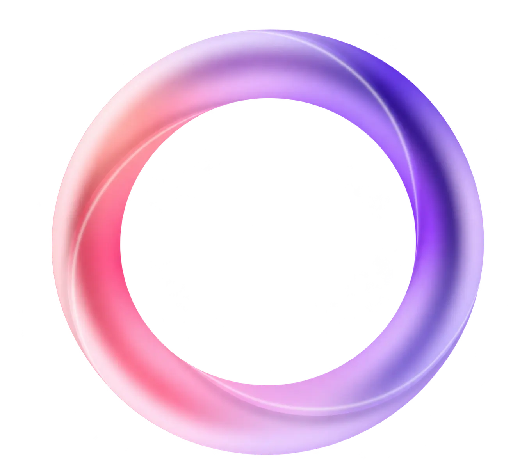
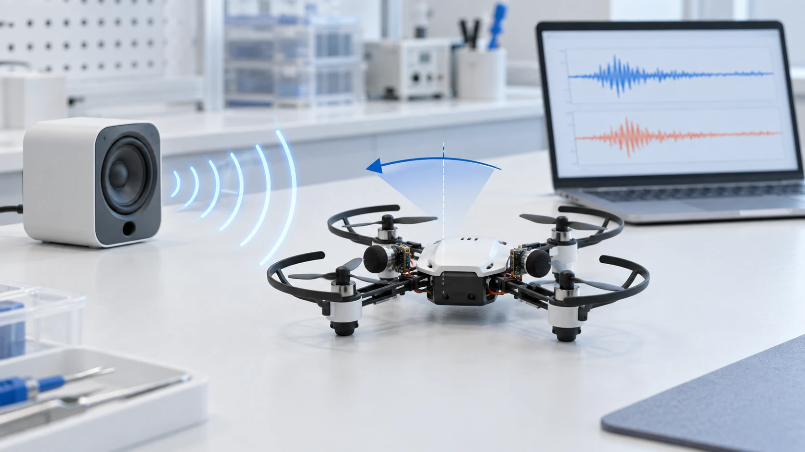

AIエージェント「道真」v1.6を公開
紅梅色と深紫色が巡るサテン調の3D円環を備えたAIエージェント「道真」を公開しました。Windows向け軽量版（約4.2 MB）をダウンロードできます。
ZIPをすべて展開し、Node.js 22以降をインストールしてから「SETUP-AND-START-WINDOWS.cmd」を実行してください（初回はライブラリを取得します）。AIとの会話にはご自身のOpenAI APIキーと別途API利用料金が必要です。
SANJO CITY UNIVERSITY
AI × MECHANICAL ENGINEERING

MEET MICHIZANE / VIRTUAL LAB DIRECTOR
学問の神様として親しまれる菅原道真の探究心を、未来のAIエージェントへ。 道真をバーチャル研究室長に据え、人とAIが一緒に考え、未知の問いを生み出す研究室のあり方を描いています。
道真が愛した梅に由来する紅梅色と、没後に追贈された正一位の位色にちなむ深紫色。二色が巡る円環で、輪廻転生と知の継承を表現しています。
由来の資料：太宰府天満宮（梅） · 太宰府天満宮（追贈） · 京都宮廷文化研究所（位色）
道真のプロフィールを見る →※研究室長はAIキャラクターとしての設定です。研究・教育の責任は教員が担います。

動画を読み込めませんでした。MP4を直接開く

MEET MOTARO
研究室マスコットの「もーたろう」です。身近な機械への小さな疑問を、実験とAIで新しいアイデアに。次世代工学研究室の研究を、一緒にのぞいてみませんか。
学生の皆さんへNEWS
欄の中をスクロールすると、過去のお知らせをご覧いただけます。
紅梅色と深紫色が巡るサテン調の3D円環を備えたAIエージェント「道真」を公開しました。Windows向け軽量版（約4.2 MB）をダウンロードできます。
ZIPをすべて展開し、Node.js 22以降をインストールしてから「SETUP-AND-START-WINDOWS.cmd」を実行してください（初回はライブラリを取得します）。AIとの会話にはご自身のOpenAI APIキーと別途API利用料金が必要です。
研究室マスコット「もーたろう」と仲間たちが動くPRムービーです。動画に加え、パソコンで動かせるWindows用展示アプリもダウンロードできます。
動画：約31秒・音声なし・約3.7 MB ／ Windows版：約30.5 MB
Windows版の初期展示時間は9:00〜17:00です。 時間外に画面が黒い場合は、F2で展示時間を変更してください。 詳しくは同梱の README-JA.txt をご覧ください。
音声でAIと会話できる、PCで起動するアプリです。青白い3D粒子の球体が音声に合わせて動きます。文字入力や、カメラ画像を使った声かけ機能も利用できます。
Windows向け起動ファイル付属／Node.js 22以上・EdgeまたはChrome・マイク・インターネット接続が必要です。 AIとの会話には、ご自身のOpenAI APIキーとAPIの利用料金が必要です。
HTML・CSS・画像など、GitHubリポジトリの最新ファイルをダウンロードできます。